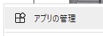

4. How to install
4.1. Difference
The differences between the web app version and the PC version are as follows.
Item |
Web app version |
PC version |
Install |
Optional (according to PWA specs) |
Follow the method of each OS |
Internet connection |
Required |
Not required |
Operating speed |
Generally |
Slightly faster |
Operation when an error occurs |
Continue operation on error |
The application may crash when an error occurs depending on the OS |
Mmemory usage |
High |
low ~ medium |
Key operation |
Interference by browser |
no interference |
File manipulation |
Very browser dependent |
Support and stability for each OS |
Drawing performance |
Low because of WebGL |
Low because of WebGL |
Update |
Automatically |
Nneed to reinstall |
4.2. Web app version
4.2.1. URL
4.2.1.1. Normal mode
This is a mode page intended for use on PCs, tablets, and VR devices.
https://vrmviewmeister.azurewebsites.net
See Main screen for the appearance of the screen.
Caution
This mode can be opened on smartphones and phablets, but I think it is difficult to operate.
4.2.1.2. Mobile viewing mode
モバイル端末での使用に最適化した画面構成のモードのページです。
https://vrmviewmeister.azurewebsites.net/mui
See Mobile viewing for the appearance of the screen.
Caution
This mode can also be opened on a PC, but some panels are initially closed.
4.2.2. Install
When you access it, such an icon will be displayed at the right end of the URL bar of the browser. Click the leftmost icon to proceed with the installation.

For Edge, you can also install from “…” to “Apps”.

 When the installation is complete, it will be displayed with a dedicated icon like this in the menu list of Windows, macOS, and Linux.
When the installation is complete, it will be displayed with a dedicated icon like this in the menu list of Windows, macOS, and Linux.
4.2.2.1. For VR-Devices
From ver 2.3.0, it is compatible with VR devices such as Meta Quest3 and PICO4. You can also access it from those devices using a browser app.
- For PICO4:
In the case of PICO4, it can be installed as a web application using PWA like a PC browser.
However, some operations such as external windows will not work properly with VR devices, so we recommend using the browser app if possible.
Note
What is installation even if you just open the website in the browser?
Warning
The web app version does not completely release the used memory even if it is reloaded. Free the memory by closing this application completely. Please be careful when using it for a long time.
4.2.3. App update
The web app version updates automatically. When there is an update, the following message will be displayed on the upper right of the screen.

After this, a reload will refresh the app.
4.2.4. Uninstall
You can remove this application from your browser by uninstalling it. You can also delete the data used by this application. Here, we will use Chrome and Edge as examples.
4.2.4.1. For Chrome
 Click on ‘Apps’ in the bookmarks bar.
Click on ‘Apps’ in the bookmarks bar.
{kind=link}
Find this app, right-click it, and click Remove from Chrome.
The following message will be displayed. Check the check box as necessary and press the “Delete” button.

4.2.4.2. For Edge
 Click “…” to “Apps” and then “Manage apps”.
Find this app and click the “x” button on the far right.

A message will be displayed in the same way as Chrome, so check the checkbox if necessary and press the “Delete” button.
4.3. PC version (each OS version)
4.3.1. Install
Since the PC version (each OS version) is a normal PC application, use it according to the installation and update method of each OS.
4.3.1.1. Windows
This is a Windows procedure.
After downloading the zip file, unzip it in a suitable location.

Double-click
vrmviewmeister.exeinside to start it.

Start like this.

4.3.1.2. macOS
Double-click the downloaded
vrmviewmeister-[version number].dmg.Drag the
vrmviewmeisterinside to your Applications folder.Please start from search or menu.
4.3.1.3. Linux
For Linux, please use a distribution that supports the AppImage format.
Double-click the downloaded
vrmviewmeister-[version number].AppImageto start it.

Warning
Due to the specifications of Unity and each library, VRM, FBX, etc. cannot be read from the terminal in Linux in a virtual environment. Please be sure to check with the actual machine.
4.3.2. Uninstall
I am not using the registry. Please delete the entire folder when uninstalling.
In addition, personal data is stored in the following folders, so please delete them together.
Windows:
C:\Users\[ユーザー名]\AppData\Roaming\vrmviewmeister
macOS:
~/Library/Application Support/vrmviewmeister
Linux:
~/.config/vrmviewmeister
4.4. Switch language
You can switch languages from the Home tab of the ribbon bar.

Select the language you want to switch to. The language is switched immediately except for some UI.